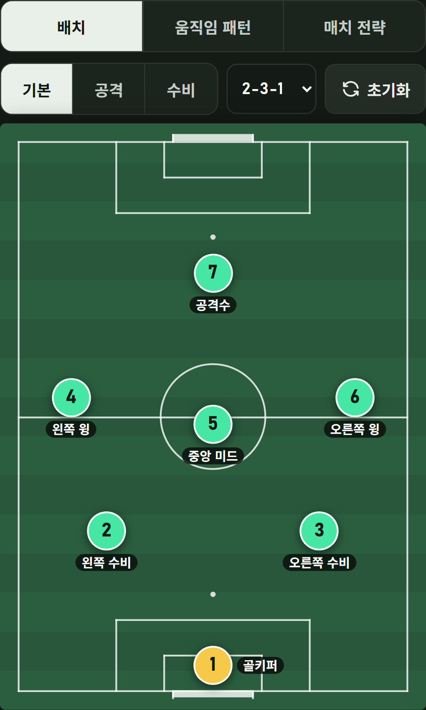
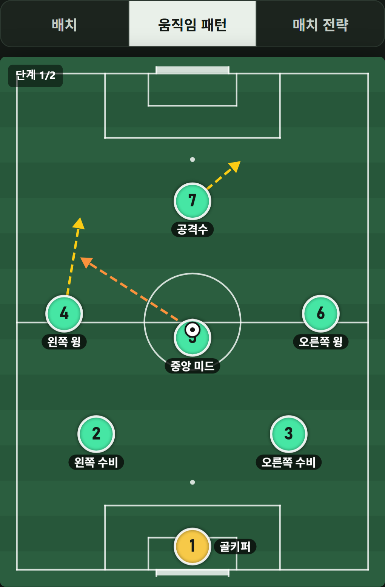

16세 이상 축구·풋살 동호인과 코치를 위한 전술 도구입니다. Google Play는 아직 미출시이며 출시를 준비하고 있습니다.
경기 전에 정리하고,
팀원에게 설명하세요.
선수 배치와 움직임
포메이션에 맞춰 선수를 놓고, 선수와 공의 움직임을 단계별 패턴으로 정리합니다.
저장과 공유
전술을 기기에 저장하고 이미지나 GIF로 공유합니다. .sq 파일로 백업하고 다시 불러올 수 있습니다.

위치에서 움직임까지.
출발 위치만으로 설명하기 어려운 전술은 움직임 패턴으로 이어서 보여주세요. 저장한 전술을 다음 경기 준비에도 활용할 수 있습니다.
궁금한 점을 알려주세요.
아이엠 헤드코치는 jaywapp이 운영합니다.